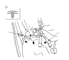
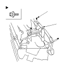

Rear Side Seat Pipe Replacement
NOTE:
Put on gloves to protect your hands.
Take care not to scratch the body and related parts.
Remove the rear side seat.
Pull the rear floor lid assembly back, and remove the spacer.
Remove the clip and pull the carpet (A) out from the rear side trim panel (B) and rear center seat slide adjuster portion (C), and pull the carpet back as needed.

Remove the bolts, and remove the rear side seat pipe (A).
Install the seat pipe in the reverse order of removal, and note these items:
Replace the clip if it's damaged.
Slip the carpet under the rear side trim panel and rear center seat slide adjuster portion properly.
